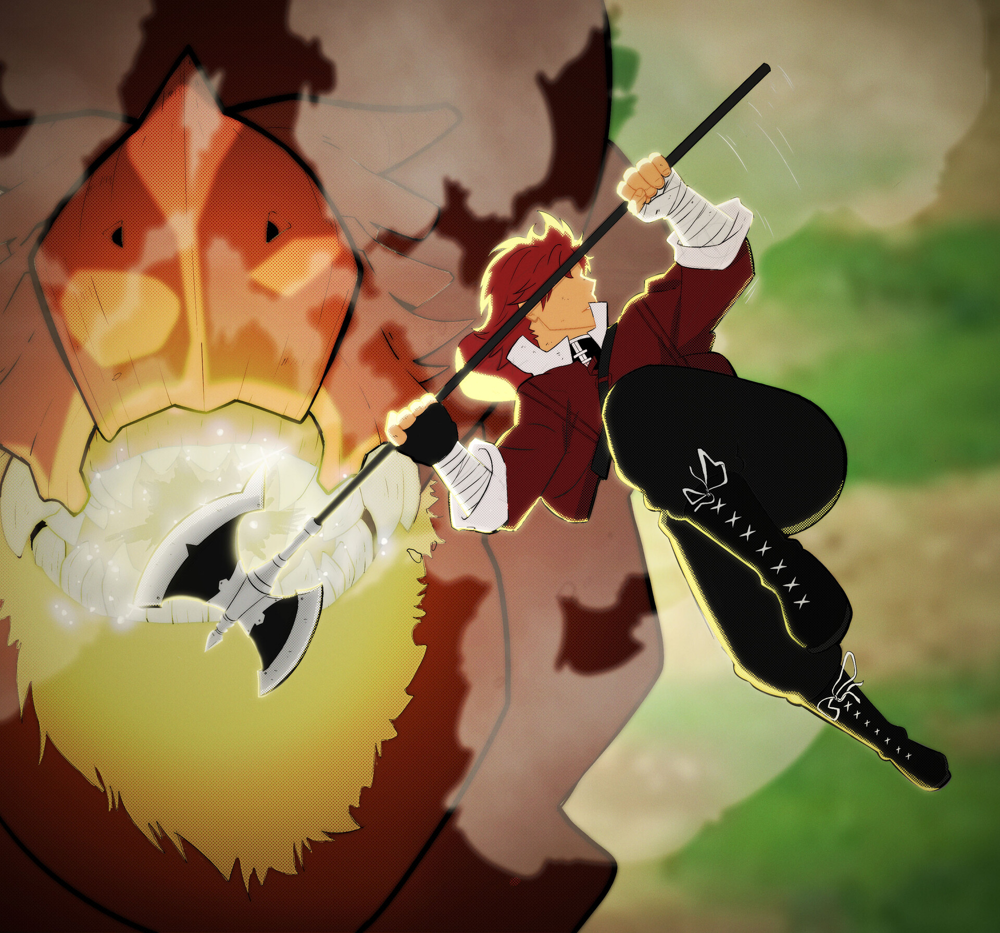

Stark es un guerrero fuerte y valiente que se une al grupo de Frieren durante su viaje. Aunque posee una gran fuerza física, tiene un carácter tímido y sensible, lo que lo hace muy humano y entrañable.
Fue discípulo del legendario guerrero Eisen, uno de los antiguos compañeros de Frieren. A pesar de su fuerza, Stark duda de sus habilidades y lucha constantemente contra su propio miedo e inseguridad.
A lo largo del viaje, demuestra gran valentía enfrentando poderosos enemigos para proteger a sus compañeros. Su evolución personal es notable, pasando de ser un joven inseguro a un verdadero héroe.
Su relación con Fern aporta toques de humor y ternura a la historia, y se convierte en una pieza fundamental en el grupo tanto en combate como en el día a día.